Лабораторная работа №1
Студент: Нгуен Динь Нам - 415149
Группа: K3340
Цель работы
Изучение клиент-серверного взаимодействия с помощью библиотеки socket в Python. Работа включает обмен сообщениями по UDP и TCP, формирование HTTP-ответов, создание многопользовательского чата и обработку запросов GET и POST.
Задание 1. Обмен сообщениями по UDP
Я разработал клиентскую и серверную программы для обмена короткими сообщениями по UDP. После запуска сервер привязывает сокет к локальному адресу и порту и ожидает данные. Клиент отправляет строку Hello, server, а сервер выводит её в терминале и отвечает сообщением Hello, client.
Для создания UDP-сокета я использовал тип SOCK_DGRAM:
socket_server = socket.socket(socket.AF_INET, socket.SOCK_DGRAM)
Метод recvfrom() возвращает полученные данные и адрес отправителя. Сервер использует этот адрес, чтобы направить ответ нужному клиенту:
request, address = socket_server.recvfrom(1024)
socket_server.sendto(b"Hello, client", address)
Перед отправкой программа преобразует текст в байты, а после получения выполняет обратное преобразование. Этот пример показывает обмен датаграммами без предварительного установления соединения.
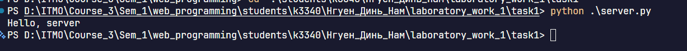
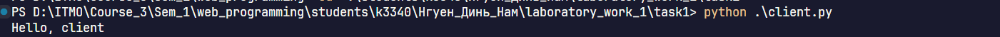
Задание 2. Вычисления через TCP
Вариант 1. Теорема Пифагора.
В качестве её применения я выбрал вычисление гипотенузы прямоугольного треугольника по двум катетам:
c = √(a² + b²)
Пользователь вводит длины катетов в клиентской программе. Она объединяет значения в строку и передаёт их серверу. Сервер преобразует данные в числа, выполняет вычисление и возвращает результат клиенту.
Для передачи данных я использовал TCP-сокет типа SOCK_STREAM. Сервер ожидает подключения после вызова listen() и принимает клиента с помощью accept():
client_connection, address = socket_server.accept()
Дальнейший обмен происходит через сокет client_connection.
Чтобы сервер мог определить конец запроса, я добавил символ \n к отправляемой строке. Программа накапливает данные до появления этого символа, поскольку один вызов recv() может вернуть только часть сообщения.
Для проверки вычисления подходит пример с катетами 3 и 4. Ожидаемая длина гипотенузы в этом случае равна 5.
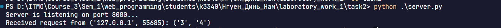
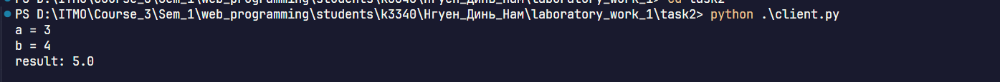
Задание 3. Передача HTML-страницы по HTTP
В третьем задании я реализовал сервер, который читает файл index.html и передаёт его содержимое браузеру. Браузер выступает клиентом и отправляет HTTP-запрос при открытии локального адреса.
Сервер формирует ответ из строки состояния, заголовков и тела страницы. Строка HTTP/1.1 200 OK сообщает об успешной обработке запроса. Заголовок Content-Type задаёт тип содержимого и кодировку, а Content-Length содержит размер тела в байтах.
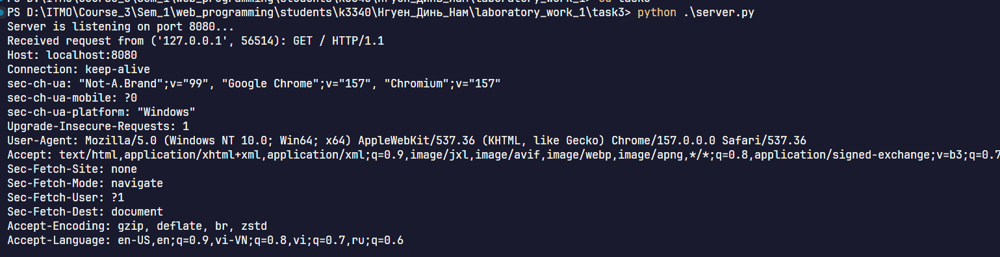
Для чтения HTML-файла я выбрал бинарный режим:
with open("index.html", "rb") as file:
body = file.read()
Полученные байты позволяют рассчитать длину содержимого через len(body) и отправить его через сокет. Последовательность \r\n\r\n отделяет заголовки от тела ответа. После получения данных браузер обрабатывает HTML и отображает страницу.
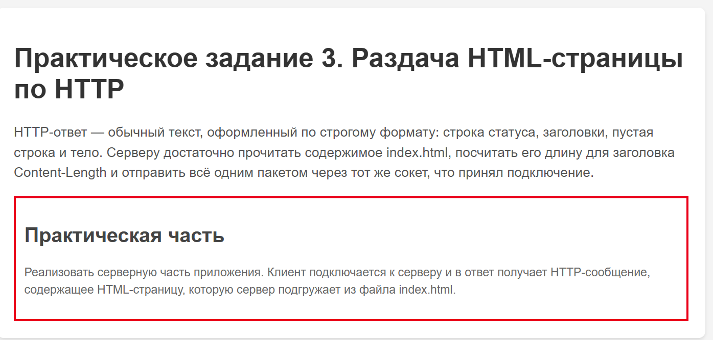
Задание 4. Многопользовательский чат
Для чата я использовал TCP и библиотеку threading. Основной поток сервера принимает новые подключения, а отдельные потоки обрабатывают сообщения участников. Благодаря этому ожидание данных от одного пользователя позволяет продолжать обслуживание остальных клиентов.
Каждый участник запускает один и тот же файл client.py в отдельном терминале и вводит nickname. Сервер получает имя первой строкой и связывает его с сокетом пользователя в словаре clients.
Обработку каждого подключения я вынес в функцию handle_client():
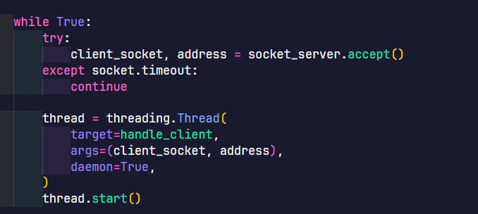
После получения nickname функция воспринимает следующие строки как сообщения. Сервер добавляет имя отправителя к тексту и вызывает broadcast(), которая передаёт сообщение остальным участникам.
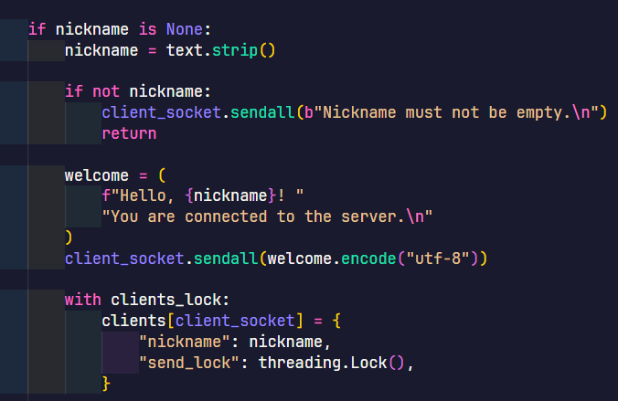
На стороне клиента отдельный поток принимает входящие сообщения, пока основной поток ожидает ввод с клавиатуры. Такая организация позволяет получать сообщения во время набора собственного текста.
Для работы с общими данными я добавил блокировки. clients_lock защищает словарь при добавлении, удалении и получении списка пользователей. Отдельный send_lock каждого клиента обеспечивает последовательную отправку сообщений в его сокет из разных потоков.
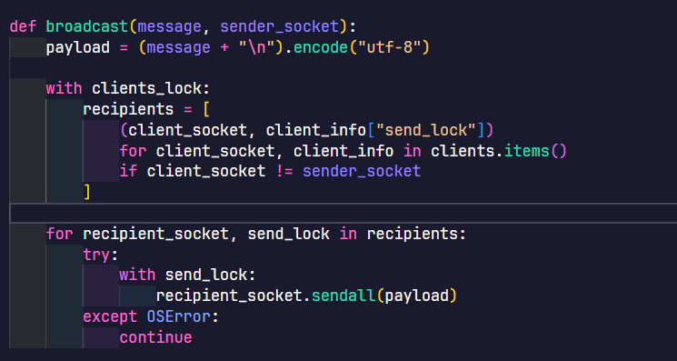
Пользователь выходит из чата с помощью команды exit. Клиент закрывает соединение, после чего сервер удаляет его из словаря и освобождает сокет.
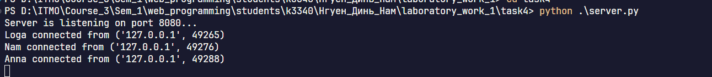
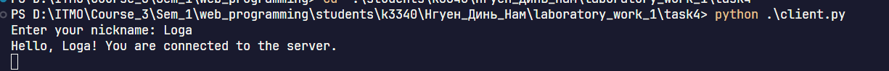
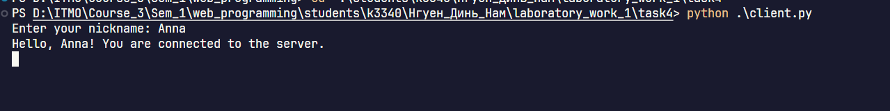
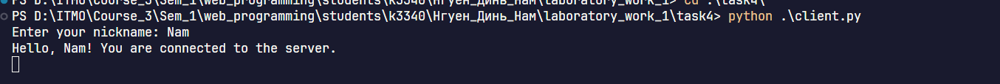
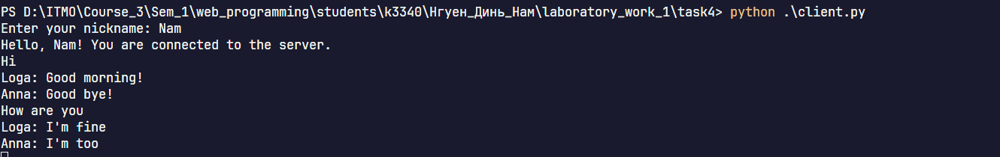
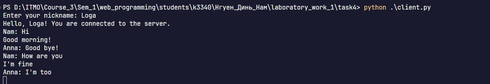
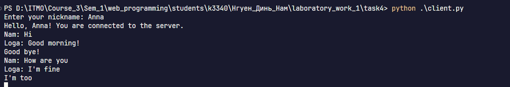
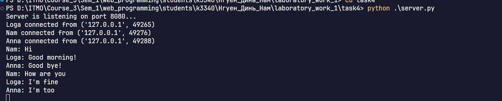
Задание 5. Веб-сервер с обработкой GET и POST
В последнем задании я разработал веб-сервер для хранения и просмотра оценок по предметам. Приложение состоит из трёх файлов. server.py обрабатывает HTTP-запросы и сохраняет данные, index.html задаёт структуру страницы, а style.css оформляет форму и таблицу.
При запросе GET / сервер возвращает страницу с текущими оценками. Поля формы расположены в порядке «имя студента, номер ИСУ, предмет, оценка». Предмет и оценка обязательны, а сведения о студенте пользователь может оставить пустыми. Для этой реализации я выбрал шкалу целых оценок от 1 до 5.
После отправки формы браузер выполняет POST /grades. Функция read_request() определяет метод и путь по первой строке запроса, получает заголовки и дочитывает тело по значению Content-Length. Затем parse_qs() разбирает данные формы.
Для хранения журнала я использовал словарь grades. Название предмета служит ключом, а список содержит оценки и сведения о студентах:
{
"math": [
{
"student_name": "Nam",
"student_id": "415149",
"grade": 5
},
{
"student_name": "Hao",
"student_id": "415442",
"grade": 5
}
]
}
Такая структура объединяет все оценки одного предмета в общей записи. Чтобы программа одинаково обрабатывала названия Math, math и MATH, я добавил удаление пробелов по краям и преобразование через casefold():
subject = fields.get("subject", [""])[0].strip().casefold()
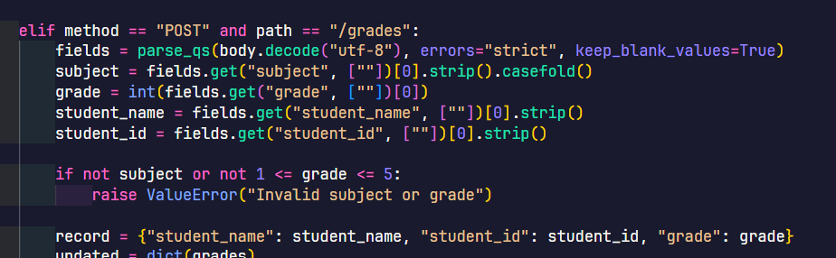
Перед сохранением сервер проверяет название предмета и допустимость оценки. Он записывает обновлённые данные вgrades.json, а при следующем запуске программа загружает этот файл.
После успешного добавления сервер возвращает 303 See Other с заголовком Location: /. Браузер переходит на главную страницу через GET и показывает обновлённую таблицу. Её столбцы содержат номер ИСУ, имя студента, предмет и оценку.
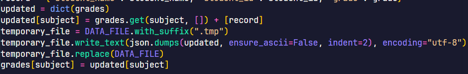
Функция make_page() формирует строки таблицы и подставляет их в HTML-шаблон Функция send_response() кодирует содержимое в UTF-8, рассчитывает его длину в байтах и отправляет HTTP-ответ.
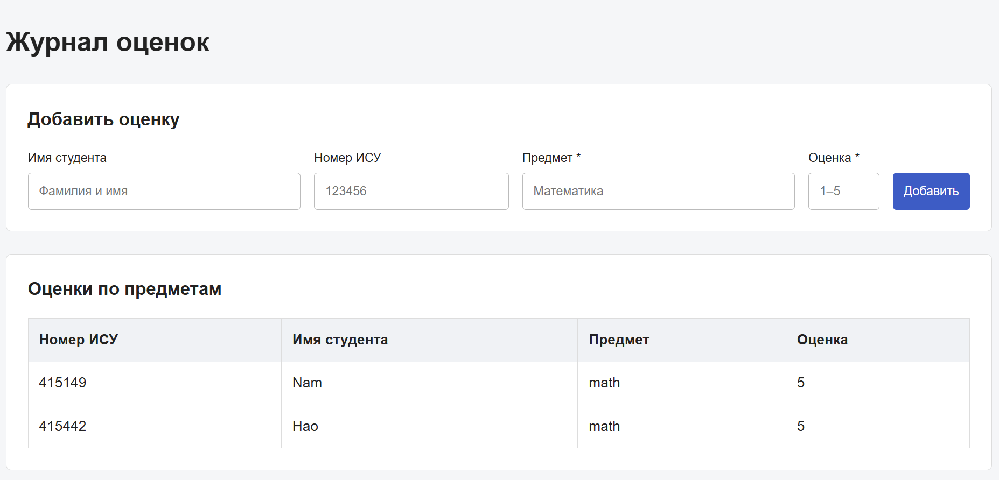
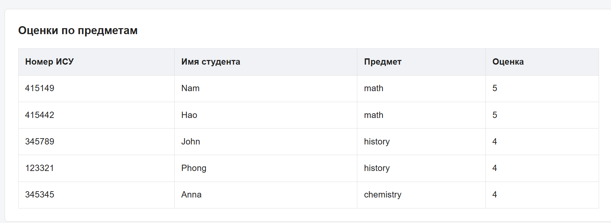
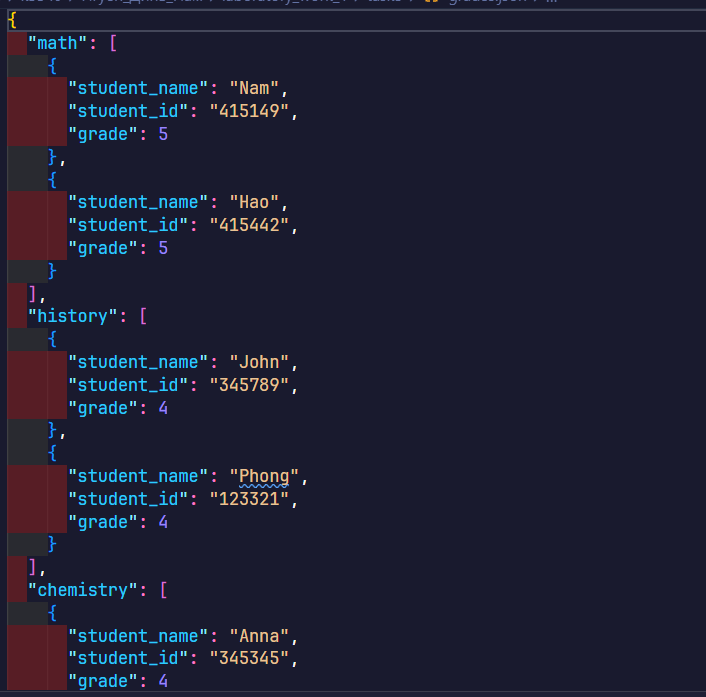
В ходе работы я реализовал обмен сообщениями по UDP, вычисления через TCP, передачу HTML-страницы по HTTP, многопользовательский чат и журнал оценок. Эти задания помогли мне разобраться в последовательности взаимодействия клиента и сервера, приёме данных по частям и формировании HTTP-ответов. Отдельное внимание я уделил потокам, защите общих данных и сохранению информации между запусками программы.